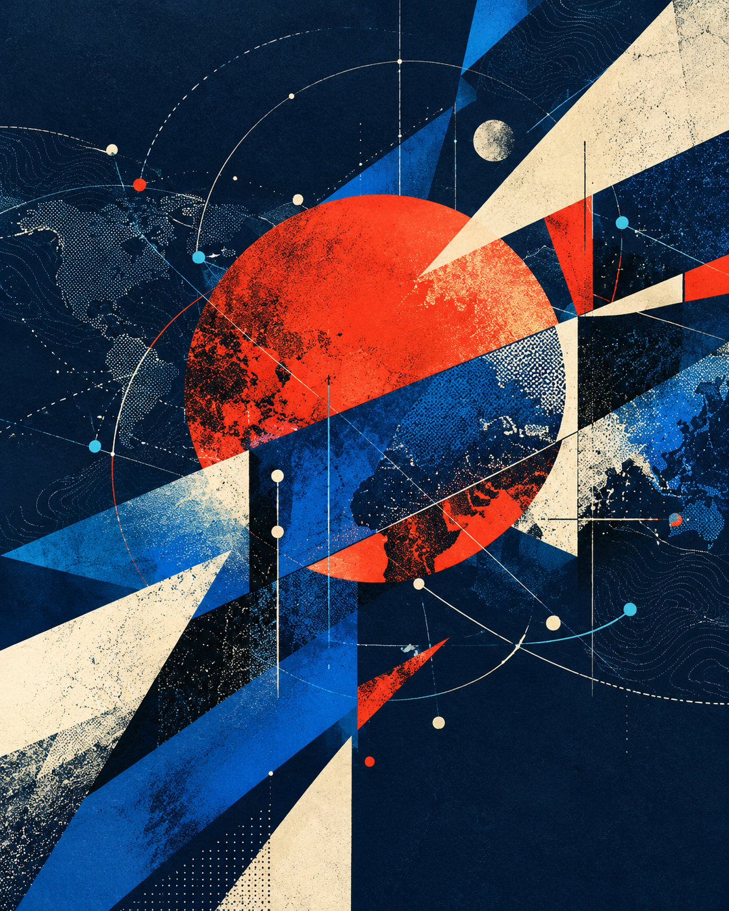

在失序年代，青年如何重新想象公共生活
政治并不只发生在议会与峰会。它存在于我们选择相信什么、与谁结盟，以及如何为尚未到来的共同世界承担责任。
创刊号专题 · 世界的重写
当旧秩序松动、新技术重塑权力，青年不应只是时代的注脚。我们从政治、经济、文明与治理四个维度，重新追问世界如何运行。

权力正在转移，财富正在重排，文明叙事重新碰撞，全球制度面临压力测试。我们关注变化背后的结构，也关心普通人如何理解并参与其中。
政治并不只发生在议会与峰会。它存在于我们选择相信什么、与谁结盟，以及如何为尚未到来的共同世界承担责任。
四个板块彼此独立，又相互交叉。我们鼓励跨越学科与地域边界的写作，让复杂议题保持复杂，也保持可读。
追踪国家、社会与权力的重新组合，关注战争与和平、民主与秩序、身份与动员。
审视增长、分配与技术变迁，理解资本、劳动和公共政策如何塑造每个人的机会。
讨论思想、历史与文化如何穿越边界，在差异中寻找理解，在传统与现代之间建立新联系。
聚焦跨国问题与制度回应，从气候、科技到公共卫生，追问合作为何困难、又如何可能。
短评、长文、书评与对谈，共同构成一个开放而有分歧的思想现场。
当大国竞争挤压战略空间，中等国家能否从被动平衡走向主动塑造？
从碳定价到产业补贴，气候政策也是一场分配政治。
展柜里的过去，如何参与塑造今天的“我们”。
全球人工智能治理不只需要共识，也需要可以执行的制度接口。
全球化并未终结，它正在失去旧名字，也在寻找新的社会契约。
不替青年发言，而是让青年进入公共世界的发言席。
《青年政治评论》是一份独立、非党派、面向全球读者的中英双语期刊。我们相信，严肃思想无需故作艰深，分歧也不必通向敌意。
我们发表论证清晰、证据充分、风格鲜明的评论与对谈，连接校园、社会与世界。